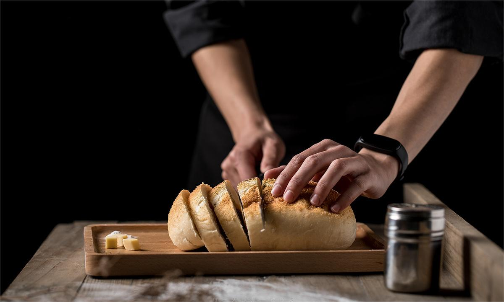

面包美味，想起来都谗，可是正减肥的MM却对它望眼欲穿，告诉大家如何巧吃面包，从而达到减肥效果。
吃法一：不要在吐司上涂太多的果酱
首先就是注意与面包相配食用的作料，我们一般不爱吃白口面包，所以在上面加了各色的果酱以及做成三明治，你所加的作料热量也是不同的哦，在吃的时候要特别注意，如果不需要刷烈活动的话，一定选热最低些的配合食用.
吃法二：要注意三明治中所包的材料
夹馅面包的热量、油脂最都偏高，而一个硬面包圈的热量与一份同等重是排骨的热量是相同的，如果退减肥的朋友还是少尝试的好。面包中还是主推全麦面包，因为它其中合有铁、维生素B、维生素E、纤维、镁、锌和纤维素，常吃可以降低患心脏病、癌症的风险。如果非常喜欢甜味面包，不妨选择吐司抹1小匙果酱，每天两片吐司抹花生酱、奶油或来一片低脂奶酪，喝一瓶低脂牛奶或酸奶，如有条件，准备一点生菜、蕃茄、小黄夹着吃，热量适中，营养会更加均衡。
吃法三：多喝浓肉菜汤
使用多种低热量蔬菜制成的浓肉菜汤，含有丰富的食物纤维，多喝这种汤，就会减少面包的摄取量，而且还可以吸收很多维他命及矿物质。
吃法四：将吐司烤得酥脆
与自色柔软的吐司相比较，吃烤得酥脆的吐司其咀嚼次数自然增加，因为咀嚼而刺激饱腹中枢神经，吃少量即可获得饱腹感。 刚出炉的面包不宜马上吃，因为此时面包还在发酵，马上吃容易得胃病，面包出炉后应至少放上两个钟头才吃比校安全。 吃法五：吃含有食物纤维的面包 肠胃不好的人不宜吃过务的面包，因为其中的酵母很容易造成胃酸，食物纤维面包倒是不错选择，因为食物纤维会抑制身体中糖分及脂肪的吸收，防止肥胖。